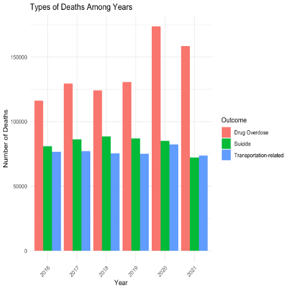
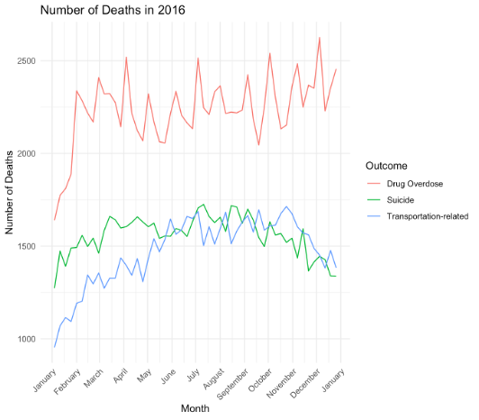
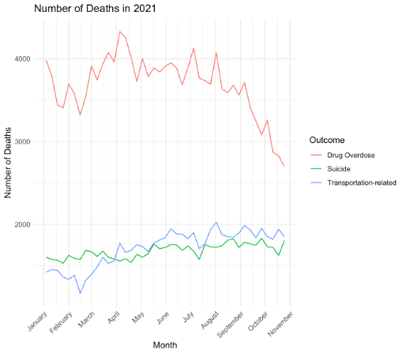
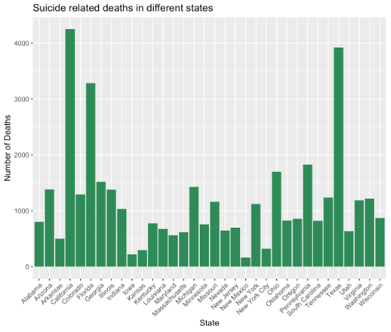
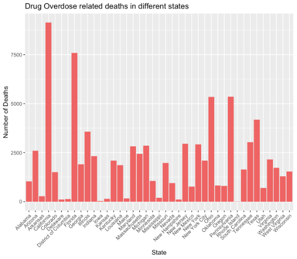
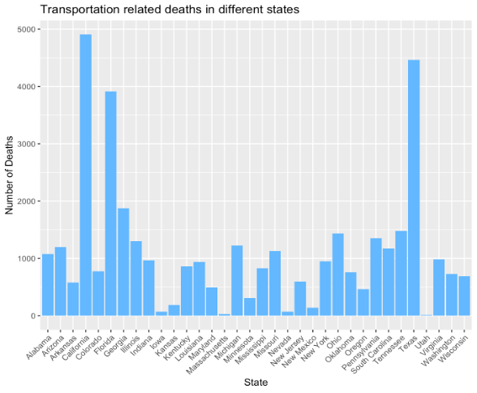

AIT580 FINAL PROJECT
Early Model-based Provisional Estimates of Drug Overdose, Suicide, and Transportation-related Deaths
AIT-580-009
Professor Dr.Harry Foxwell | George Mason University
Anusha Dusakanti
George Mason University
Fairfax, Virgina
adusakan@gmu.edu
Abstract
This project aims to understand the trends in drug overdose, suicide, and transportation-related deaths in the United States. The dataset, derived from death certificate data processed by the National Center for Health Statistics (NCHS), provides insights into mortality patterns for these causes of death. It is updated weekly as new data becomes available. These estimates, which are available by week and primary causes of death, give an early indicator of mortality trends and help in the identification of at-risk individuals and geographical locations. The dataset enables the analysis of intervention effectiveness and the identification of variables associated with effective policies for preventing these deaths. Using R, Python, and SQL for data transformations and visualizations, the research analyzes trends over time, examines the interaction of individual and environmental risk factors, and evaluates the impact of specific interventions on death rates.
Introduction
Unintentional drug overdoses, suicides, and transportation-related accidents are major public health concerns in the United States, contributing significantly to preventable mortality. Understanding the trends, risk factors, and potential impact of interventions for these causes of death is crucial for developing effective prevention strategies and saving lives.
This study utilized the CDC’s dataset of model-based provisional estimates of weekly drug overdose, suicide, and transportation-related deaths to explore several key research questions:
1.How have trends in these causes of death changed over time, and are there any seasonal patterns or long-term trends that can be identified?
2. How do individual-level risk factors (e.g., mental health disorders, previous substance abuse, history of suicide attempts) combine with environmental factors (e.g., access to lethal means, social support networks) to affect the likelihood of dying from drug overdoses, suicides, and transportation-related accidents?
3.Can the implementation of specific interventions or policies be associated with changes in mortality rates for these causes of death, and what characteristics of effective interventions can be identified from the data?
By addressing these questions, the study aims to provide insights that can inform the development and implementation of targeted, evidence-based strategies to reduce the burden of drug overdoses, suicides, and transportation-related deaths in the United States.
Literature Review
Motor vehicle accidents, drug overdoses, and suicides are major public health concerns, accounting for a significant percentage of mortality rates, particularly among young people. Understanding the effectiveness of programs and policies designed to reduce these fatalities is critical for developing successful public health measures.
Karpf and Williams [2] did a thorough examination of several legislative measures aimed at teen drivers and motor vehicle mortality. Their findings highlight the importance of initiatives such as raising the minimum licensing age, enforcing night curfews, and conditioning licenses on seat belt use in reducing fatalities among young drivers.
They suggest that postponing license for 16- and 17-year-olds, who have disproportionately high collision rates, could result in older and more experienced drivers replacing them, thus lowering overall motor vehicle fatalities. Furthermore, the implementation of night curfews is cited as an important approach for reducing fatalities involving young drivers.
The article ‘Trends in Drug Overdose Deaths Among US Adolescents’[3] indicates that beginning in 2020, teens suffered a significant spike in overdose mortality, particularly fentanyl-related deaths. This increase contrasts with declining drug usage rates among teens across the country, indicating a higher danger from illegal fentanyls, which are highly strong and sometimes added to counterfeit pills resembling prescription opioids or other substances. The highest overdose death rates were reported among American Indian and Alaska Native teenagers, indicating larger racial and ethnic disparities in overdose mortality. However, Latinx adolescents had very high rates compared to Latinx adults, indicating the need for additional research and intervention initiatives to address these disparities. Furthermore, the influence of specific COVID-19 pandemic elements, such as mental illness and disruptions in illicit drug markets, could not be adequately determined.
The article by Phillips and Luth[4] provides evidence supporting Tarde’s perspective, demonstrating how cultural norms and ideas of masculinity can influence suicide mortality rates. For example, the “gender paradox” in suicide - where women attempt suicide more often but men die by suicide at higher rates - suggests that cultural views play a key role. The authors note that suicide may be perceived as a solution to aging-related problems, particularly among older white men, reflecting the influence of cultural beliefs on suicidal actions.
A recent report [5] by the National Center for Health Statistics examined early provisional estimates of drug overdose, suicide, and transportation-related deaths in the United States, utilizing nowcasting methods to account for reporting lags.
The analysis revealed several important trends:
Drug Overdose: Since early 2019, there has been an increase in predicted counts; this acceleration became evident in February 2020. It’s possible that things have become worse lately.
Suicide: There were strong seasonal trends, with mid-year numbers being higher and winter numbers being lower. Predicted counts in 2020 fell from March to June of that year, then slightly decreased from that point on, matching historical levels at first.
Deaths related to transportation showed clear seasonal trends, peaking in the middle of the year and troughing in the winter, much like suicide rates. Forecast counts for 2020 first coincided with historical levels, then started to drop in March and April before rising in the following months.
Trends unique to each jurisdiction were also looked at. All things considered, the research sheds light on the temporal trends of these mortality outcomes and points out possible variations in 2020 from prior years.
Methodology
To address the research questions, a multi-pronged analytical approach was employed utilizing a combination of R, Python, and SQL.
Data Acquisition and Transformation
The primary dataset [1] used in this study was provided by the Centers for Disease Control and Prevention. This dataset was accessed and downloaded from the HealthData.gov portal.
To prepare the data for analysis, various data transformation and cleaning tasks were performed using R programming language. This included handling missing values, converting data types, and restructuring the data into a format suitable for further analysis.
Data Exploration and Visualization
Exploratory data analysis was conducted using a combination of R and Python. Visualizations such as line charts, bar plots, and heatmaps were created to identify trends, patterns, and relationships within the data. These visualizations were useful in addressing the first research question regarding changes in mortality rates over time and the identification of seasonal patterns or long-term trends.
Targeted Analyses
To study the relationships between individual-level risk variables, environmental factors, and mortality rates, as well as the potential impact of initiatives and policies, SQL queries were used to extract relevant subsets of data. This included filtering the data based on geographic region, demographic factors, and time periods of interest.
The gathered data was then examined using R and Python, with statistical techniques and modeling approaches tailored to the research goals. This enabled a more in-depth investigation of the detailed interplay of individual, environmental, and policy-level factors and their impact on observed mortality trends.
Cloud-based Data Storage and Analytics
To facilitate efficient data storage, processing, and visualization, the dataset was uploaded to an Amazon S3 (Simple Storage Service) bucket. AWS Glue DataBrew was then employed to perform data cleaning, transformation, and exploratory analysis, generating interactive visualizations and insights to support the research objectives.
This combination of tools and techniques are leveraged to conduct a comprehensive analysis of the trends, risk factors, and potential impact of interventions related to drug overdose, suicide, and transportation-related deaths in the United States.
Results
The data presented in Figure 1 shows the trends in drug overdose, suicide, and transportation-related deaths in the United States from 2016 to 2021. Several notable findings emerge from this data:
Drug Overdose Deaths
Drug overdose deaths were the highest among the three causes of death examined. The number of drug overdose deaths steadily increased over the time period, reaching a peak in 2020. This aligns with reports of a significant spike in overdose mortality, particularly involving fentanyl, during the COVID-19 pandemic period.
Suicide Deaths
Suicide deaths exhibited a different pattern, increasing from 2016 to 2018 before declining in the subsequent years. The data suggests that suicide mortality rates may have been impacted by the pandemic, with a drop observed in 2020.
Transportation-Related Deaths
Deaths related to transportation showed more variability over the 2016-2021 time frame. The data indicates that transportation-related fatalities were highest in 2020, potentially reflecting changes in travel patterns and behaviors during the pandemic, before declining again in 2021.

The line graphs in Figures 2 and 3 show the number of deaths due to different causes, over time in 2016 and 2021 respectively.
In both years, the data indicates that transportation-related deaths exhibited a clear seasonal pattern, with higher numbers observed during the August to November time period. The consistent seasonal pattern in transportation-related mortality across multiple years suggests that there are likely environmental, behavioral, or other factors that contribute to this cyclical trend.


The data presented in Figure 4 shows the number of suicide deaths across different states in the year 2020. The results indicate that two states with particularly high suicide rates were California and Florida.
According to the information from the U.S. News & World Report article [6], these two states also had the largest homeless populations in the country in 2022. The article suggests that the high rates of homelessness in these states may be contributing to their elevated suicide mortality.
In contrast, the data shows that Colorado and Massachusetts had relatively lower suicide rates compared to other states. This aligns with the information from the CDC webpage, which indicates that these states have implemented various policies and interventions aimed at addressing suicide disparities and preventing suicide.
The findings highlight the complex interplay between individual, environmental, and policy-level factors that can influence suicide mortality. The high suicide rates observed in states with large homeless populations, such as California [7]and Florida, underscore the need to address social determinants of health and provide comprehensive support services for vulnerable populations.
Conversely, the lower suicide rates in states like Colorado and Massachusetts suggest that targeted policy interventions and suicide prevention programs can be effective in reducing suicide deaths. These results emphasize the importance of a multifaceted approach to suicide prevention that addresses both individual risk factors and the broader social and environmental contexts.
The search results indicate that Texas has a high Black population, with over 3.5 million Black residents, making it the state with the second largest Black population in the country. Additionally, the data shows that the suicide rate among Black individuals has seen a significant increase in recent years, with a 53.8% spike since 2019.
This suggests that the high suicide rate in Texas may be partially attributable to its large Black population, who face disproportionate challenges and discrimination that can contribute to mental health issues and suicidal behaviors.
Furthermore, the search results indicate that states with larger Black populations, such as California, Florida, and Georgia, also tend to have higher overall suicide rates. This points to the role that systemic racism, social determinants of health, and lack of access to mental healthcare may play in driving disparities in suicide mortality.

The bar graph in Figure 5 shows the number of drug overdose-related deaths across different states in the United States. The data indicates that several states had particularly high rates of drug overdose mortality, including California, Florida, Ohio, Pennsylvania
These states with high drug overdose death rates align with the information from the U.S. News & World Report article, which identified California and Florida as having the largest homeless populations in the country[6]. The article suggests that the high rates of homelessness in these states may be contributing to elevated substance abuse and overdose mortality.
Additionally, the data on the Black population by state shows that Texas, California, Florida, and New York have some of the largest Black populations in the country[8]. Research has shown that the Black community has been disproportionately impacted by the opioid epidemic and rising overdose rates.
In contrast, the data indicates that states like Iowa, Rhode Island, and Colorado had relatively lower rates of drug overdose deaths. These states may have implemented more effective prevention and harm reduction strategies or have different demographic and socioeconomic profiles that confer lower overdose risk.

The bar graph in Figure 6 shows the number of transportation-related deaths in various states in the year 2020. The data indicates that some states had significantly lower rates of transportation-related fatalities compared to others.
Specifically, the states of Utah and Massachusetts had relatively lower numbers of transportation-related deaths.
The National Safety Council data[9] shows that in 2022, Massachusetts had the lowest motor vehicle fatality rate per 100 million miles traveled among all states. This suggests that Massachusetts has been effective in implementing policies and interventions to improve road safety and reduce transportation-related mortality.
Similarly, the Insurance Institute for Highway Safety (IIHS)[10] data indicates that Utah had one of the lower percentages of motor vehicle crash deaths occurring in single-vehicle crashes in 2021. Single-vehicle crashes are often associated with higher fatality rates, so Utah’s lower share of these types of crashes may contribute to its relatively lower transportation-related death toll.
These findings align with the data presented in Figure 6, which depicts Utah and Massachusetts as having fewer transportation-related deaths compared to other states. This highlights the importance of state-level policies, infrastructure, and safety programs in influencing transportation-related mortality outcomes across the country.

Limitations
Despite the useful insights gained from the analysis, certain limitations must be acknowledged when interpreting the results. Furthermore, excluding data from specific geographic areas may induce biases into the research, especially when comparing death rates across demographic categories. Without extensive data coverage, it is difficult to determine the entire amount of racial, ethnic, and socioeconomic gaps in mortality outcomes, limiting the depth of insights into underlying systemic inequities.
Firstly, the dataset used in this study includes missing values for specific geographic regions, such as Alaska and Hawaii. The lack of data may result in partial representations of mortality patterns, thus skewing the overall study and limiting the accuracy of visualizations. As a result, the conclusions drawn from the research may not adequately account for the variation of mortality patterns across all locations of interest, limiting the findings’ generalizability.
Future Research
Examining the Impact of Interventions and Policies: The dataset provides weekly estimates of mortality, which could be leveraged to assess the potential impact of specific interventions or policy changes implemented at the state or local level. Researchers could employ techniques like interrupted time series analysis to evaluate whether the introduction of new programs or policies was associated with changes in the observed mortality trends.
Investigating Racial and Ethnic Disparities: The search results indicate that certain racial and ethnic groups, such as American Indian/Alaska Native and Black populations, may be disproportionately affected by these causes of death. Further research could delve deeper into the underlying drivers of these disparities, exploring the role of social determinants of health, access to care, and systemic biases.
Analyzing Spatial and Temporal Patterns: The dataset provides information at the state level, which could be used to conduct spatial analyses to identify geographic hotspots or clusters of high mortality rates. Researchers could also investigate the seasonal patterns observed in the data, exploring potential environmental, behavioral, or other factors that may contribute to these cyclical trends.
References
[1] “Early Model-based Provisional Estimates of Drug Overdose, Suicide, and Transportation-related Deaths,” Data.gov, Mar. 30, 2022. https://catalog.data.gov/dataset/early-model-based-provisional-estimates-of-drug-overdose-suicide-and-transportation-relate-b35b2 (accessed Mar. 04, 2024).
[2] R. S. Karpf and A. F. Williams, “Teenage drivers and motor vehicle deaths,” Accident Analysis & Prevention, vol. 15, no. 1. Elsevier BV, pp. 55–63, Feb. 1983. doi: 10.1016/0001-4575(83)90007-6.
[3] J. Friedman, M. Godvin, C. L. Shover, J. P. Gone, H. Hansen, and D. L. Schriger, “Trends in Drug Overdose Deaths Among US Adolescents, January 2010 to June 2021,” JAMA, vol. 327, no. 14. American Medical Association (AMA), p. 1398, Apr. 12, 2022. doi: 10.1001/jama.2022.2847.
[4] J. A. Phillips and E. A. Luth, “Beliefs About Suicide Acceptability in the United States: How Do They Affect Suicide Mortality?,” The Journals of Gerontology: Series B. Oxford University Press (OUP), Jan. 25, 2018. doi: 10.1093/geronb/gbx153.
[5] L. Rossen, “VSRR-11: Early Provisional Estimates of Drug Overdose, Suicide, and Transportation-related Deaths: Nowcasting Methods to Account for Reporting Lags,” National Center for Health Statistics, Feb. 2021. doi: 10.15620/cdc:101132.
[6] J. Haines, “States With the Largest Homeless Populations,” USNews, Apr. 06, 2023. https://www.usnews.com/news/best-states/articles/states-with-the-most-homeless-people
[7] M. Kendall, “It’s now significantly more deadly to be homeless. Why are so many people dying?,” CalMatters, Mar. 01, 2024. [Online]. Available: https://calmatters.org/housing/homelessness/2024/02/homeless-mortality-report/
[8] Black Demographics, “Black population by state - BlackDemographics.com,” BlackDemographics.com, Feb. 08, 2024. https://blackdemographics.com/population/black-state-population/
[9] “Motor-Vehicle deaths by State - Injury facts,” Injury Facts, Apr. 10, 2024. https://injuryfacts.nsc.org/state-data/motor-vehicle-deaths-by-state/
[10] “Fatality Facts 2021: State by state,” IIHS-HLDI Crash Testing and Highway Safety. https://www.iihs.org/topics/fatality-statistics/detail/state-by-state